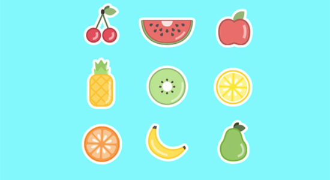
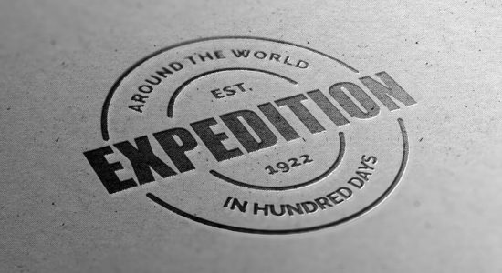

Приветствую Вас, дорогие друзья! Сегодня Вы тут встретите в основном очень вкусные и современные иконки на кухонную тематику, которые совершенно…
Далее

Привет, мои дорогие друзья! Сегодня я спешу представить Вам невероятную и крутую подборку лучших логотипов в форматах PSD и AI….
Далее

 Самое свежее
Самое свежее